立绘与表情路由
234 张原始透明 PNG，26 种表情、9 种服装与姿势组合。模型按每句语境选择表情，路由器验证并限制在所选服装内。
AYANA · PERSONAL AGENT
立绘、细宋体电影对白和紧凑输入收在一张可定制便签里，跳字跟随实际语音播放进度。 看屏幕、读网页、查资料、改文件——需要动手的事，她会先让你确认。
真实界面还原：对白跟随语音跳字，四套主题点一下就能换。
CAPABILITIES
从呼出的那一刻起，立绘、声音、对白、输入和任务都在同一张便签里；设置与历史收在独立窗口。
234 张原始透明 PNG，26 种表情、9 种服装与姿势组合。模型按每句语境选择表情，路由器验证并限制在所选服装内。
细宋体 Light、每段最多两行，跳字跟随 AudioWorklet 实际消费的音频采样；标点保留停顿，句子完成后再停留淡出。
夜墨、纸笺、林间、暮海四套主题，另有透明、磨砂或自选图片背景；便签宽度、立绘尺寸与字幕字号都可预览后保存。
GPT-SoVITS 常驻独立推理进程，显式加载权重；Ctrl+Alt+Space 立即打断，关闭呼出面板也会停止输出。
按住麦克风说话、松开识别，结果先填进输入框由你修改再发送。Whisper tiny 对技术词可能误识别，不会直接替你提交。
兼容 OpenAI 接口（如 DeepSeek deepseek-flash），默认原生 function calling：携带 tools schema、流式解析 delta.tool_calls、以 role:"tool" 回传真实结果。
模型密钥经 Windows DPAPI 加密保存在本机，界面与日志不接收；Full access 默认关闭，开启的写操作直接应用并保留备份。
聊天窗口顶部直接切换对话；长对话自动整理摘要，个人记忆从你的原话整理、跨对话携带，可查看来源、修改或忘记。
GALLERY
素材库共 234 张原始透明立绘（26 表情 × 9 套服装姿势）。这里展示校服的两组姿态；其余服装不属于公开页面。
INTERFACE
便签常驻桌面角落，设计按钮里可以调整一切；工作台单独收纳任务、文件差异和资料出处。以下均为实际界面截图。
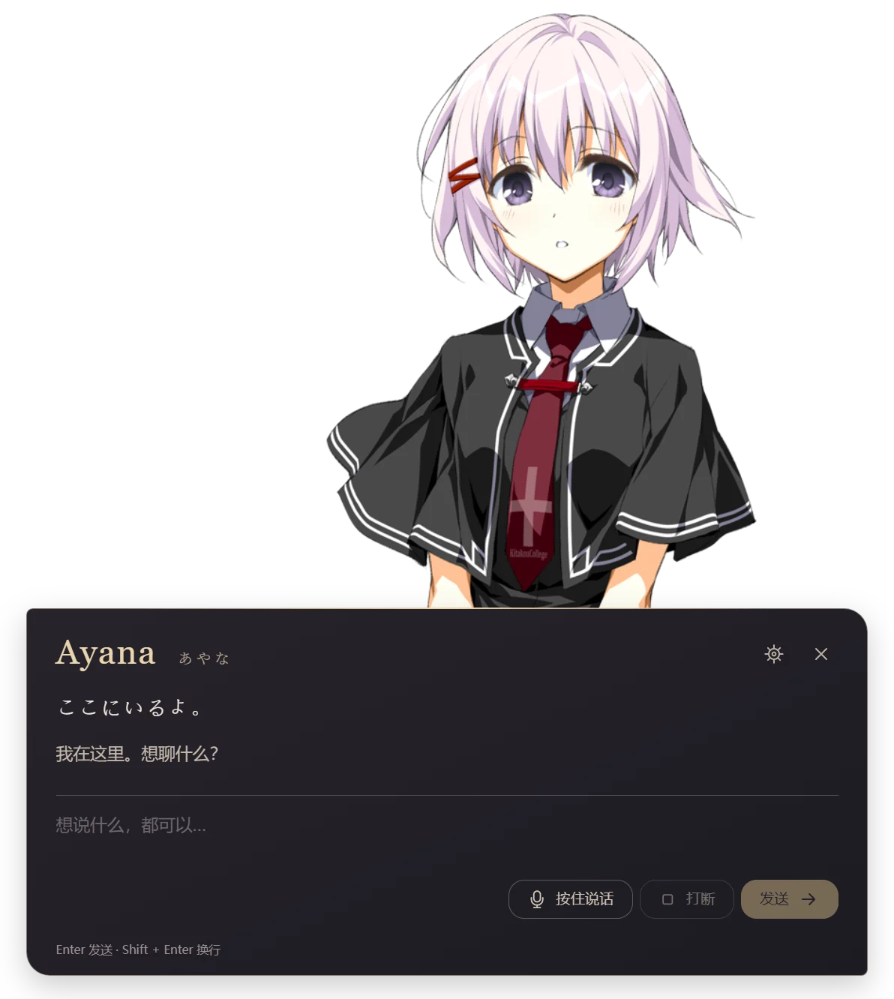
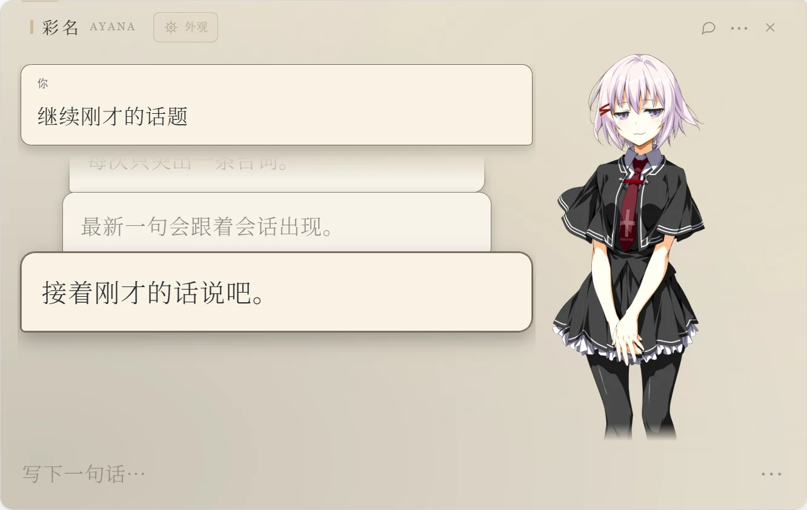
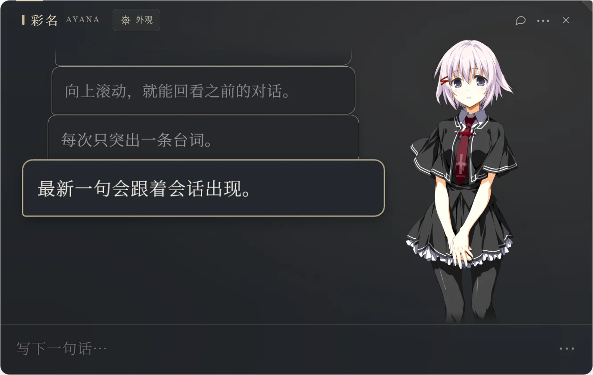
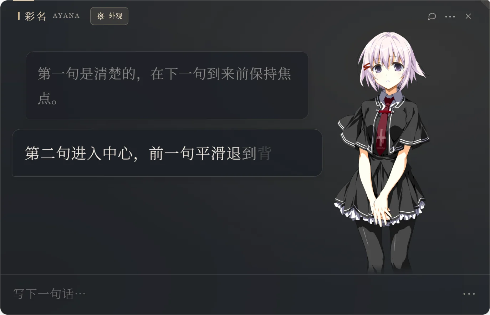
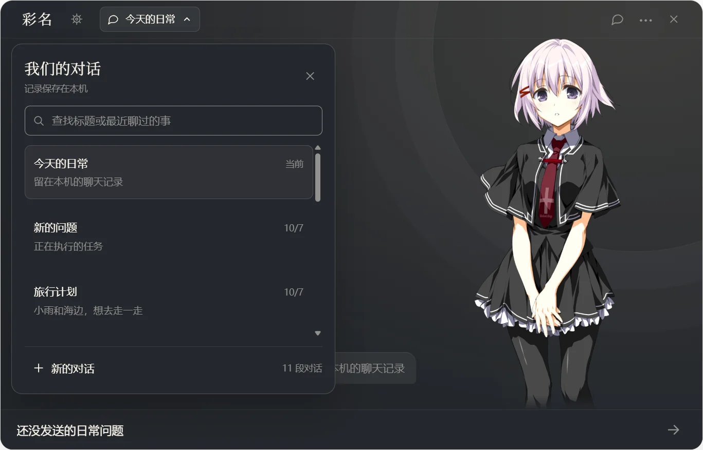
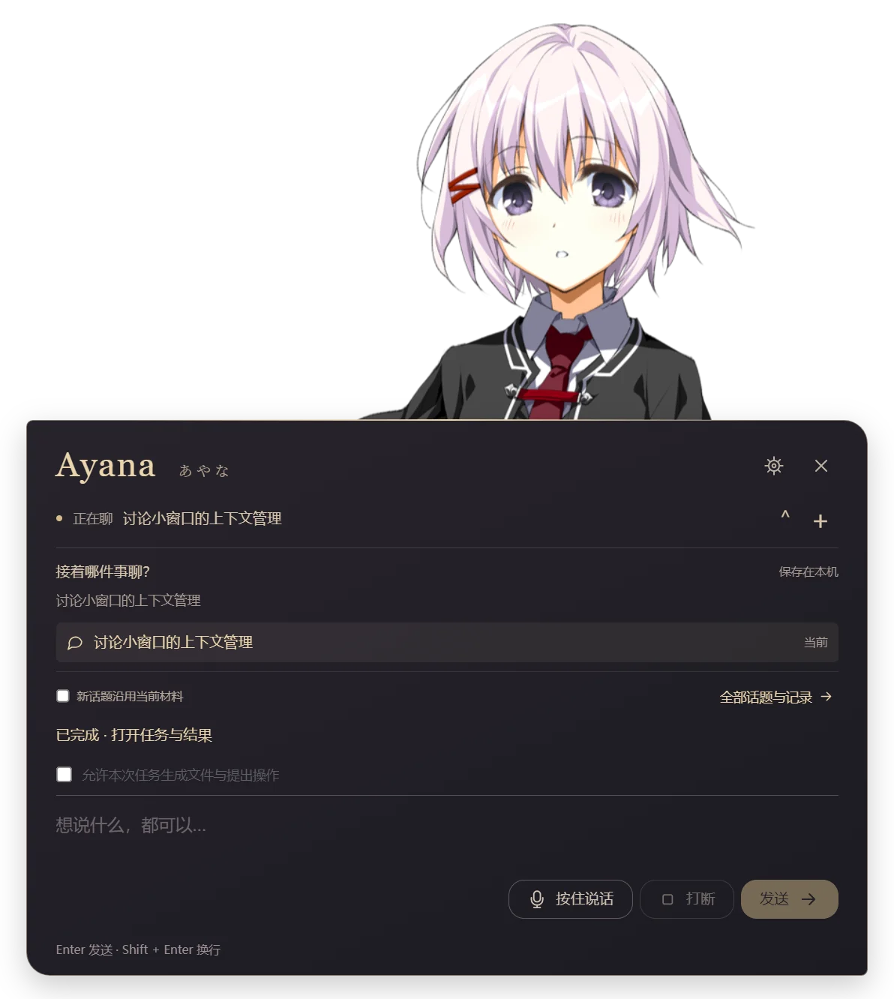
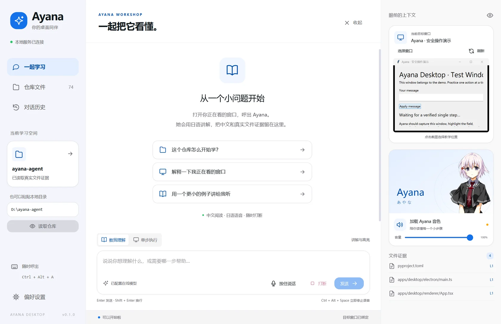
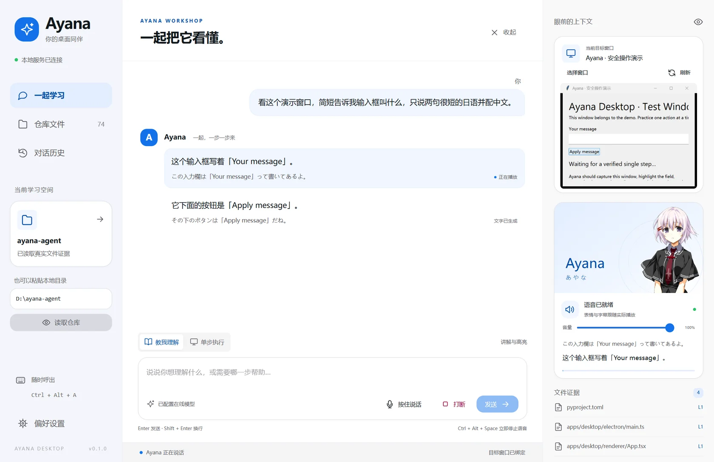
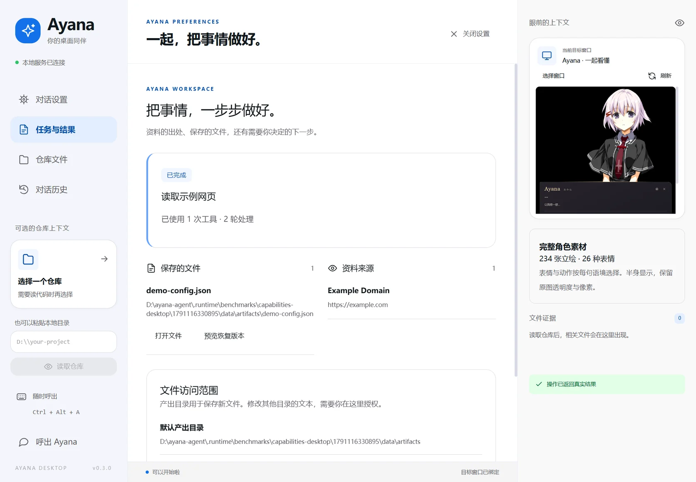
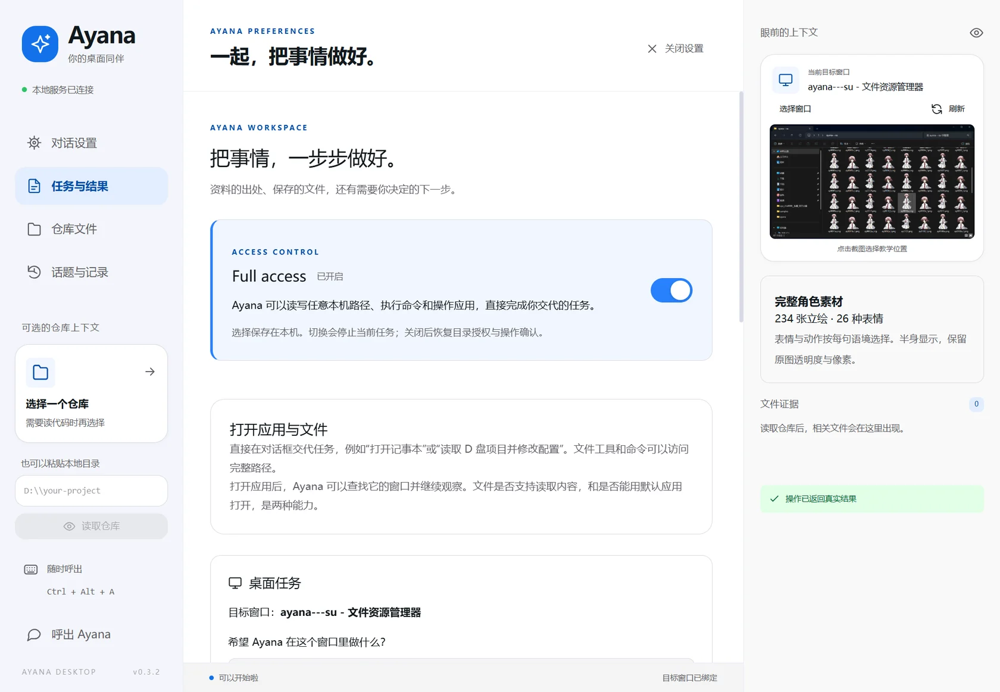
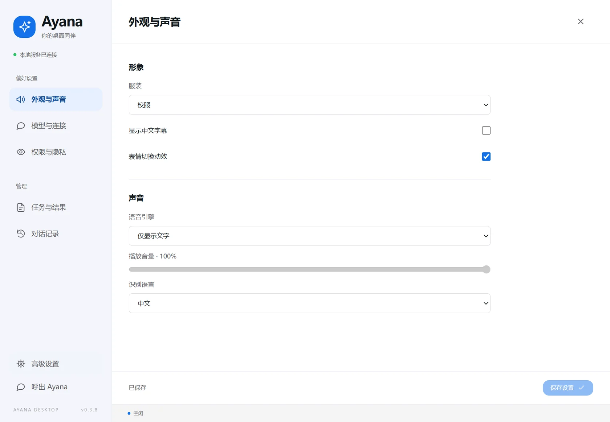
TOOLBOX
对话框里直接描述需求，模型自行选择工具。读操作随时可用；写操作需要执行模式或 Full access，每个结果都保留真实出处。
Bing RSS 无需凭据，也可配置 Brave；正文可分段续读，页面内容按不可信证据处理。
读取文本与 PDF / DOCX / XLSX / PPTX；修改前先读取原文，保留备份并返回差异。
单步执行需要新鲜截图并核对观察结果；支持普通权限、已解锁、可捕获且未最小化的窗口。
PowerShell 返回真实退出码，超时或取消会停止整棵进程树；长任务用受管理的后台进程。
实际边界：受保护内容和管理员窗口会明确失败；发送输入不等于目标成功，只有实际观察到的结果可用于判断。关闭 Full access 会停止当前任务并恢复原有目录授权与确认规则。
GET STARTED
最省事的方式是直接双击便携包；想改代码再从源码构建。模型权重、音色引擎与角色素材独立于 Git 管理，没有资源时可先用文字模式。
Windows x64，Python 3.11+ 与 Node.js。
python -m venv .venv
.\.venv\Scripts\python.exe -m pip install -e '.[test,stt]'
npm --prefix apps/desktop ci
npm --prefix apps/desktop run build
npm --prefix apps/desktop start音色与立绘路径只写入被 Git 忽略的 config/local.json。
.\.venv\Scripts\python.exe scripts/prepare_resources.py `
--voice-root '你的 ayana-voice 目录' `
--avatar-root '你的正常立绘目录'任意 OpenAI 兼容端点皆可；密钥经环境变量或 DPAPI 加密保存。
provider = openai
base_url = https://api.deepseek.com
model = deepseek-flash
# 密钥：环境变量 AYANA_API_KEY 或 DEEPSEEK_API_KEY开发目录也可以直接双击 启动 Ayana.cmd；便携包首次解包与加载音色需要等待，期间文字输入与界面保持可用。启动新版前请退出旧实例。
ARCHITECTURE
| 目录 | 职责 |
|---|---|
packages/protocol | 完整模型对象解析、日语语句与表达验证 |
services/agent | 会话、流式模型、工具证据、背压、取消、SQLite 历史 |
services/tts | 常驻独立推理进程、显式权重加载、参考缓存、单 worker |
native/windows | Win32 截图、独立 MTA UIA、单步输入与结果观察 |
apps/desktop | Electron、受限 IPC、React、唯一 AudioWorklet 播放器 |
characters/ayana | 人设、工具政策、受控表情映射 |
RELEASES
公开版本托管在 GitHub Releases；更新的构建先在本机验证，再决定是否发布。
中断只读观察工具的死循环，如实报告受阻；等待卡片只在工具执行时出现，并去掉计时器。就是上面的下载按钮指向的版本。
GitHub Release呼出只打开对话、注视当前窗口（Ctrl+Alt+W）；人设去掉可照搬台词；工具结果保留更完整。
GitHub Release聊天窗口顶部直接切换对话：搜索标题与最近消息、新建、任务中途取消，草稿各自保留。
工具调用恢复修复：保留原始名称搜索、精确查询与格式回退、正文链接与续读、独立联网并发、单条错误恢复与真实进度。
连续对话与个人记忆：后台整理早期上下文、记忆来源与忘记、对话与记忆管理页、完整 Markdown / JSON 导出。